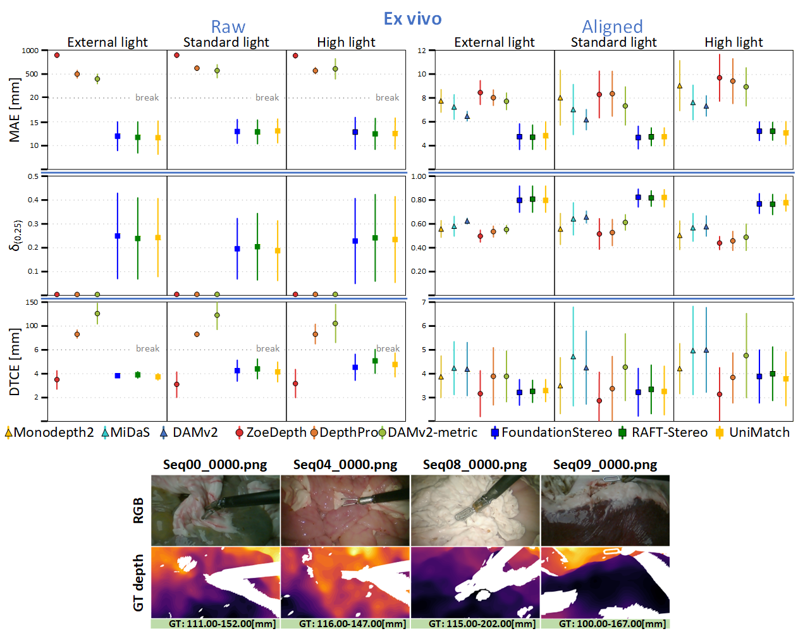
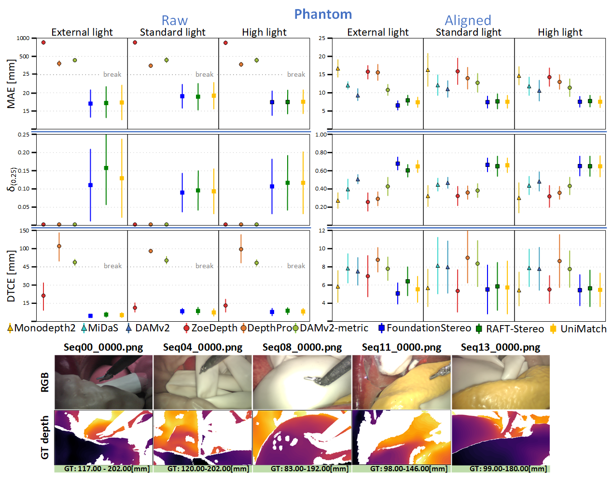

DRENDS dataset aquisition overview: Team, objectives, setup, and sample data.
Depth perception in robotic minimally invasive surgery remains a critical challenge for many downstream tasks, demanding advanced depth estimation techniques and ground truth data for their validation. Current datasets lack data with ground-truth depth information in dynamic scenarios; therefore, we present DRENDS (Depth in Robotic Endoscopy with Dynamic Scenarios), a novel dataset comprising sequences of high-resolution stereo images captured during the robotic laparoscopic manipulation of a human phantom and ex vivo porcine tissue, along with ground-truth point clouds for each frame and calibration data. The data were collected under three illumination conditions and across different anatomies involving tissue manipulation and non-rigid deformations. Our code for rectifying stereo images, handling camera-perspective occlusions, and obtaining depth maps per frame is open source for reproducibility and easy adaptation. Finally, we also conduct baseline evaluations using state-of-the-art depth estimation models to establish benchmark performance on our dataset. The results and data highlight the challenges and potential of metric temporally consistent depth estimation in robotic surgery, encouraging further advancements in tissue deformation prediction for medical applications. We publicly release DRENDS to foster innovation and collaboration in this critical field.


@misc{DRENDS2025,
title={DRENDS: A Dataset for Depth in Robotic Endoscopy with Dynamic Scenarios},
author={Gerardo Loza and Mattia Magro and Benjamin Calmé and Junlei Hu and Emanuele Ruffaldi and Dominic Jones and Elena de Momi and Sharib Ali and Pietro Valdastri},
archivePrefix={arXiv},
year={2025}
}
This work was supported by the European Research Council (ERC) through the European Union’s Horizon 2020 Research and Innovation Programme under grant 818045, the European Commission (EC) through the European Union’s Horizon 2020 Research and Innovation Programme under grant 952118 and the National Institutes of Health (NIH) (Award No. R01EB018992). Any opinions, findings, conclusions, or recommendations expressed in this material are those of the authors and do not necessarily reflect the views of the ERC, the EC, or the NIH. The work was also supported in part by UK Research and Innovation (UKRI) [CDT grant number EP/S024336/1] and by the Engineering and Physical Sciences Research Council [grant number UKRI914]. M. Magro's PhD studies are supported by Medical Microinstruments, Inc., and in part by the Italian Ministry of Universities and Research under PNRR DM 117, Italy. G. Loza's PhD studies are supported by the Mexican Council for Science and Technology (CONACYT) and the University of Leeds. The authors would like to thank Intuitive Surgical, Inc., for the donation of the da Vinci system and Samwise Wilson for his support during the organisation of the data collection process.